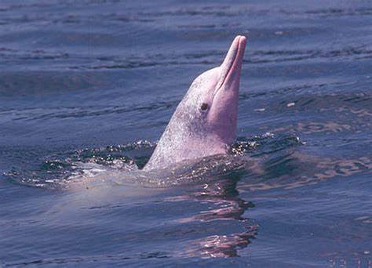
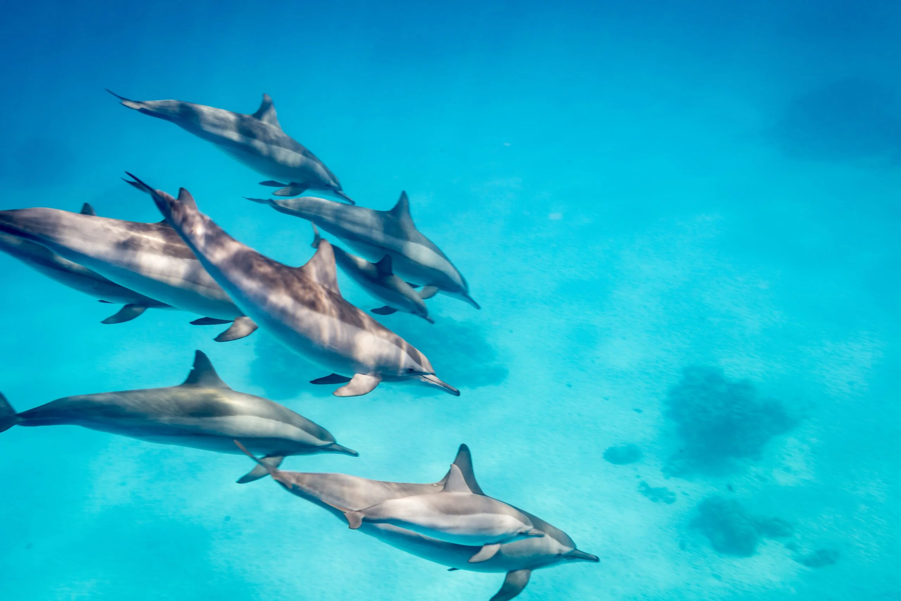
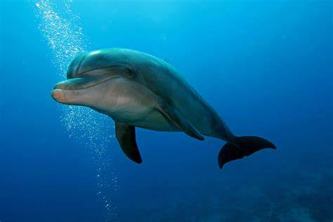
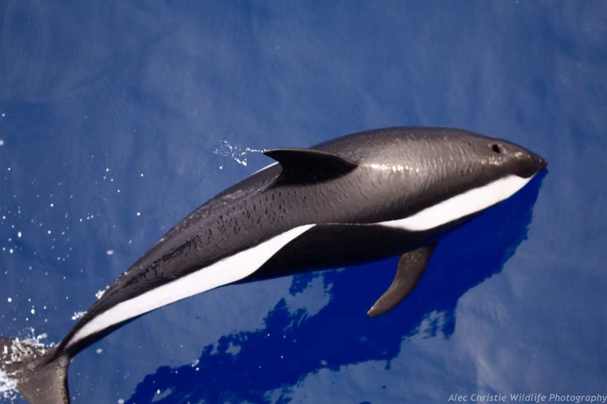

|
Where Dolphins live/ What type of animals they are:
|
Different types of Dolphins:
|
What they eat/Potential threats for them:
|
Fun facts about dolphins:
|
|

|

|

|

|
Different types of Dolphins!
There are many different types of Dolphins, which all typically fit into three differing categories. The three
main categories are Oceanic Dolphins, River Dolphins and Blackfish Dolphins. Oceanic Dolphins include 38 different species, while River Dolphins have 4 species
and Blackfish include 6 species. There are many different types of Dolphins. These include:
- Amazon River Dolphins (Pink Dolphins)
- Bottlenose Dolphins
- Spinner Dolphins
- Atlantic Spotted Dolphins
- Hourglass Dolphins
Amazon River Dolphins (Pink Dolphins):
Amazon River Dolphins, or more commonly known as Pink Dolphins are usually found in rivers such as the Amazon. They don't fit into one
specific group of dolphin, as they are made up of 3 different species. These include the Amazon River Dolphin, the Bolivian River Dolphin and also the Orinoco River
Dolphin. As you may have guessed, these types of Dolphins get their unique name ferom the fact that they are pink, unlike most species of dolphins. Below includes
4 different species of Dolphins: